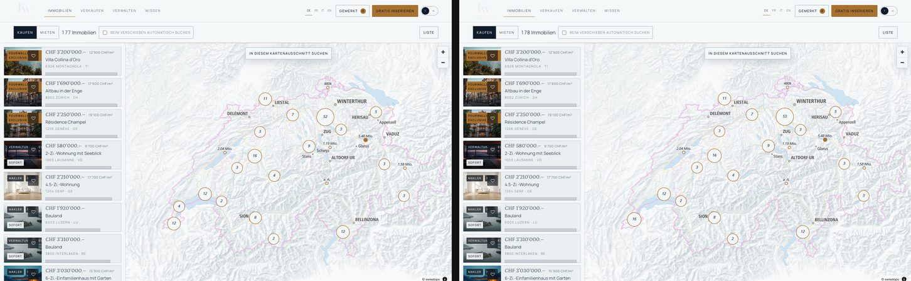
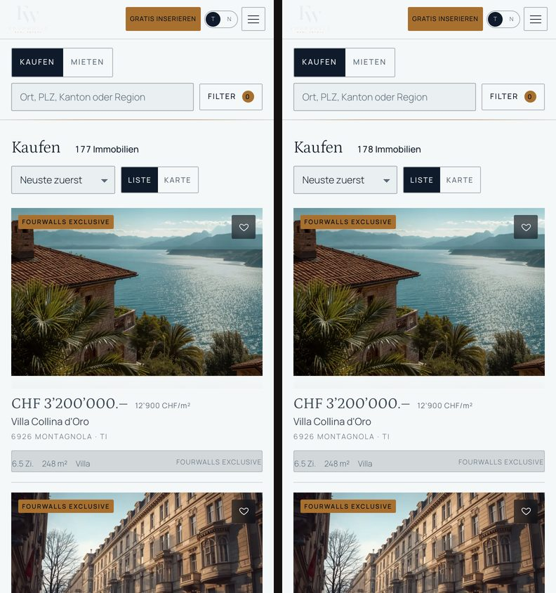

P5.2 hatte eine Objektseite bewiesen. P5.3 verlangte den ganzen öffentlichen Marktplatz: Einstieg → Suche → Filter → Karte → Objekt → Ähnliche → Merken → Suchabo-Grenze → Anfrage — alles über die Produktionsarchitektur, ohne dass der alte statische Katalog zur Laufzeit noch gebraucht wird. Das ist geschehen, mit dem vollständigen Demo-Bestand.
| Bedingung (§90) | Beleg |
|---|---|
| Demo-Bestand in Postgres | Importer app/scripts/import-demo.mjs: 289 synthetische + 15 Mandate + 3 Testinserate, eine Transaktion, 5 s, Qualitätsbericht (Abschnitt 1–2) |
| Alle veröffentlichten Inserate haben echte Routen | 294 öffentliche Inserate × 4 Sprachen = 1 176 Routen mit 200, 588 Umleitungen (308) geprüft, 13 nicht-öffentliche → 404 (Abschnitt 3) |
| Suche serverseitig | server/search.ts: eine SQL-Umsetzung des P3-Vertrags über listing_public; die Seite rendert Treffer auf dem Server, Filter navigieren (Abschnitt 4–5) |
| Umkreis in PostGIS | ST_DWithin auf geom_public, 5/10/20/50 km um Luzern geprüft, Distanzen und Monotonie stimmen (Abschnitt 6) |
| Ausschnittsuche serverseitig | ST_MakeEnvelope; «In diesem Kartenausschnitt suchen» ist ein Server-Aufruf, der Ausschnitt steht in der Adresse (?box=) (Abschnitt 7) |
| Karte mit öffentlicher Geografie vom Server | Kartenmodus liefert alle Punkte (gerastert) und die 60 Karten der Seitenliste; Liste und Karte stimmen für fünf Anfragen überein (Abschnitt 7) |
| Ähnliche Objekte sind echt | server/similar.ts: Prototyp-Punkte in SQL, deterministisch, nur Veröffentlichtes (Abschnitt 8) |
| Kein Altbestand zur Laufzeit | listings.js/properties.js werden nur vom Importer gelesen; Client-Bundle ohne Titel, Signaturen, Koordinaten, Geheimnisse (Abschnitt 10) |
| Geo-Privatsphäre in der Breite | 289 ungenaue Inserate: keine exakte Koordinate in Liste, Karte, 25 Objektseiten (HTML + RSC), Bundle; Ausschnitt filtert über den öffentlichen Punkt (Abschnitt 9) |
| UFER bleibt | Suche Tag/Abend 0.14 %, 390 px 0.03 %, Standard-Objekt 0.21 %, Exclusive 0.05 %; Karte 7.6 % erklärt (Abschnitt 12) |
Nicht gebaut, wie beauftragt: Konto, Anmeldung, Moderation, Herausgeber-Werkzeuge, echter Objektspeicher, echter Mailversand, Staging-Host. Der Prototyp unter final/ ist unverändert; das P5.2-Tag p5.2-vertikale-scheibe ist unangetastet.
Speicherplatz zu Beginn 5.3 GB frei, keine Bereinigung nötig, keine Installation über den P5.2-Satz hinaus (eine Abhängigkeit weniger: Tests laufen mit node:test). Während der Phase wurde ausserhalb dieser Arbeit Platz freigegeben (Ende: 19 GB).
Der Prototyp zeigt nicht 320 Inserate: FWP.alle() ersetzt die 31 synthetischen «Exclusive» durch die 15 echten Mandate — 304 sind der Massstab. Der Importer liest listings.js, properties.js, detail-data.js und geo.js im Sandkasten, bildet sie ab (die Entscheide stehen im Dateikopf, Abschnitt «Abbildung») und schreibt alles in einer Transaktion. Ein Fehler → nichts geschrieben; jeder Lauf räumt seinen eigenen Bestand zuerst weg.
| Zählung | Prototyp (alle()) | Datenbank | Befund |
|---|---|---|---|
| Inserate | 304 | 304 + 3 Test | gleich |
| Quelle privat / agentur / verwaltung / entwickler / fourwalls | 108 / 113 / 29 / 20 / 34 | 108 / 114 / 28 / 20 / 34 | ein Inserat wechselt agentur←verwaltung: das handgeschriebene Dossier haus-zrich-2 bestimmt die Quelle — genau wie in portal.html |
| Transaktion Kauf / Miete | 198 / 106 | 198 / 106 | gleich |
| Objektart wohnung / haus / villa / chalet / mfh / gewerbe / grundstück / parkplatz | 131 / 56 / 15 / 17 / 19 / 25 / 22 / 19 | gleich | gleich |
| Status publiziert / reserviert / archiviert | 274 / 18 / 12 | 274 / 18 / 12 (+1 Entwurf) | gleich — die 13 «verkauft/vermietet» des Prototyps sind alle zugleich archiviert (12 im Bestand) und werden als archived geführt |
| Genauigkeit exakt / ungefähr / gemeinde | 4 / 197 / 103 | 4 / 197 / 103 (+ Test 1/1/1) | gleich |
| Exclusive (Mandate mit featured) | 5 | 5 | gleich |
| Orte (Gemeinden / Kantone / Regionen) | 38 / 26 / 9 | 38 / 26 / 9 | in place, mit Mittelpunkt und Hüllrechteck |
Kennungen sind aus der Altkennung abgeleitet (FWL-1000 → FWL-2026-101000, Mandat 002 → FWL-2026-200002), darum bei jedem Lauf gleich. Das Seehaus behält FWL-2026-000142. Strassen werden nie importiert. Die exakte Lage geht nach geom_exact; den öffentlichen Punkt rastert der Trigger — das Produktionsmodell gilt, nicht die anzeige-Koordinaten des Prototyps.
Der Importer prüft, bevor er schreibt, und verschweigt nichts. Nichts davon wurde durch erfundene Fakten «repariert».
| Kategorie | Anzahl | Umgang |
|---|---|---|
| Anbieter mit mehreren Quellen (derselbe Name als Makler und Verwaltung) | 11 | eine Organisation je Name, Art nach erstem Vorkommen; berichtet |
| Anbieter mit uneinheitlichem Prüfstatus | 8 | Prüfstatus ist im Produktionsmodell eine Eigenschaft der Organisation (verified_at) — geprüft, wenn mindestens ein Inserat geprüft war; darum tragen einige Karten zusätzlich «geprüft» (Abschnitt 12) |
| Status doppelt (archiviert + verkauft/vermietet) | 12 | als archived geführt — im Prototyp ohnehin unsichtbar |
| Ort ohne Eintrag im Ortsindex (Montagnola, Grimentz, Andermatt) | 3 | Mandate ohne place_id: nur über Kanton, Region, Umkreis oder Ausschnitt findbar — wie im Prototyp |
Bild ohne Varianten (mat-eiche, Materialbild eines Dossiers) | 1 | übersprungen, berichtet |
| Lage exakt auf einem Rasterpunkt | 1 | berichtet — verrät nicht mehr als jeder Rasterpunkt (± halbe Zelle) |
| Fehlende Fläche / Baujahr / Zimmer (ausser Land und Parkplatz), ungültige Zimmerzahlen, Miete mit Kaufpreis | 0 | — |
Verworfen, weil es dafür keine Tabelle gibt und sie nichts über das Objekt aussagen: views, favoritesCount, inquiryCount; neu entsteht zur Laufzeit aus published_at (14 Tage). Bericht: app/var/import-bericht.json.
app/scripts/routen-test.mjs prüft alle 307 Inserate über HTTP gegen den Produktions-Build — nicht fünf Stichproben:
| Prüfung | Ergebnis |
|---|---|
| Kanonische Route in de, fr, it, en (294 öffentliche Inserate) | 1 176 / 1 176 → 200, Titel und Abschnitte im HTML |
| Falscher Slug → 308 auf die kanonische Adresse | 294 / 294 |
| Falsches Transaktionssegment (mieten/kaufen) → 308 | 294 / 294 |
| Nicht-öffentlich (Entwurf, archiviert) → 404 | 13 / 13 |
| Erfundene Referenz, Unsinn → 404 | 2 / 2 |
| Serverfehler | 0 · Dauer 14 s |
Jede Karte, jeder Kartenpunkt, jede Objektseite und jedes «Ähnliche» kennt dieselbe Identität: die öffentliche Referenz. Die Merkliste ist darauf verschlüsselt, auf allen drei Oberflächen.
Eine Umsetzung, drei Oberflächen. server/search.ts erfüllt den P3-Vertrag (SearchQuery → SearchResult) als eine SQL-Abfrage über die Sicht listing_public. Liste, Karte, Startseite (Exclusive-Auswahl) und die Vorschau-Zahl im Filterfeld fragen alle hier; «Ähnliche» hat seine eigene, dokumentierte Abfrage (Abschnitt 8), keine zweite Filterlogik.
/de/immobilien/kaufen?ort=ort-zuerich&um=10&typ=wohnung rendert die Treffer auf dem Server. Filter sind Client-Inseln, die navigieren (React-Transition: die alten Treffer bleiben stehen, nichts blitzt). Zurück/Vor, Teilen, Aktualisieren funktionieren damit von selbst — Reise A geprüft: Filter → Objekt → Zurück, Zustand erhalten.ort, um, typ, pmin, pmax, zi, zimax, fl, flmax, gr, bjv, bjb, et, vf, feat, quelle, alle, sort, seite), dazu ansicht=karte und box=. Die Seite liest nachsichtig (ungültiger Einzelwert → Standard), die API streng (422 mit Feldfehlern).place (server/geo.ts): Gemeinde über place_id, PLZ, Kanton, Region über Spalten; Vorschläge über /api/orte in vier Sprachen. Ein Sprachwechsel ändert das Label, nie die Entität.modus=map), kein zweiter Dienst: gleiche WHERE-Klausel, andere Auslieferung — alle Punkte (zehn Felder) plus die 60 Karten der Seitenliste. Das hält eine Geschäftsregel an einem Ort. Ab etwa 2 000 Punkten je Antwort wäre serverseitige Aggregation fällig; heute sind es höchstens 178.?seite=2), der Server rendert dann 48 — Zurück von einem Objekt beginnt nicht wieder bei 24.policy.ts als demo markiert, nicht bestätigt. «Empfohlen» gibt Exclusive keinen Bonus.noindex, follow und Canonical auf die Bereichsseite mit Ort.| Filter | Umsetzung |
|---|---|
| Transaktion, Ort (Gemeinde, PLZ, Kanton, Region), Umkreis, Ausschnitt | Segment/Spalten, place_id, ST_DWithin, ST_MakeEnvelope |
| Objektart, Preis von/bis, Zimmer von/bis, Wohnfläche von/bis, Grundstück ab, Baujahr von/bis | Spalten der Sicht; Preis je Transaktion (price_chf / rent_net_chf, in Rappen) |
| Etage (EG, nicht EG, ab 2., Dach), Verfügbarkeit (sofort, in 3 Monaten) | Ausdrücke wie im Prototyp (floor, available_immediately, available_from ≤ heute + 92) |
| Ausstattung (18 Merkmale, UND-verknüpft), Anbieter, nur Fourwalls, auch reservierte | property_feature, publisher_kind, Status |
| Nullzustand | die Seite zählt Auswege mit derselben Suche (Umkreis 10/20/50, Budget +25 %, ein Zimmer weniger, Filter weg, Kanton, alles) und bietet sie als Links an — nichts wird stillschweigend geändert (Reise geprüft: der Weg-Link liefert Treffer) |
Ohne Datenmodell-Gegenstück blieb nichts weg. Etage wird nur bei Wohnung/Gewerbe angeboten, Grundstück nicht bei Wohnung/Parkplatz; CHF/m² nur bei Kauf eines Wohnobjekts, auf 100 gerundet; Tragbarkeit nur bei Kauf eines Wohnobjekts — Miete, Land, Parkplatz und Gewerbe zeigen keinen Finanzierungsblock (geprüft).
app/scripts/skalen-test.mjs misst die Datenbank (EXPLAIN ANALYZE, Median aus drei Läufen) mit synthetischen Beständen, die es danach restlos wieder entfernt (Ist-Bestand 307 vorher und nachher):
| Abfrage | 320 | 2 000 | 10 000 | 50 000 | Index (50k) |
|---|---|---|---|---|---|
| Standard «Neuste», Kauf | 0.2 ms | 0.2 | 0.2 | 2.1 | listing_aktiv_neu |
| Preis + Zimmer, Preis aufsteigend | 0.7 | 0.2 | 0.9 | 8.9 | listing_aktiv_preis |
| Umkreis 20 km Luzern | 0.2 | 0.6 | 2.1 | 117 | listing_geom_gix (GIST) |
| Kartenausschnitt Miete (2 000 Punkte) | 0.3 | 1.1 | 0.4 | 0.6 | listing_geom_gix |
| Zählung mit Facetten, Umkreis 10 km | 1.0 | 0.6 | 0.8 | 0.6 | listing_geom_gix |
| Sortierung CHF/m² | 0.6 | 5.5 | 13 | 139 | kein Index (Sichtausdruck) |
| Ähnliche Objekte | 1.2 | 6.3 | 21 | 210 | Seq Scan → Migration 0010 |
Bis 10 000 Inserate ist alles interaktiv. Bei 50 000 fallen drei Abfragen auf: der Umkreis (117 ms, GIST-Index trägt, aber viele Kandidaten), CHF/m² (139 ms — price_per_m2 ist ein Sichtausdruck, indexierbar erst als gespeicherte Spalte) und «Ähnliche» (210 ms, Seq Scan). Für Letzteres liefert Migration 0010 einen Teilindex über veröffentlichte Inserate nach Objekt und Transaktion; die Plansätze der 50k-Stufe liegen in app/var/skalen-bericht.json. Das ist kein SLO, es sind beobachtete Zahlen; 50 000 liegen weit jenseits des Demo-Bestands.
Verbindungen: postgres.js mit einem prozessweiten Pool (max. 10), im Entwicklungsmodus über globalThis gegen Hot-Reload-Stürme gesichert; Build und Laufzeit öffnen keine Verbindung vor der ersten Anfrage. Für mehrere Instanzen genügt das; ein externer Pooler wird erst mit Staging entschieden.
MapLibre aus P3 wurde wörtlich übernommen: components/map/ukarte.js ist karte.js als ES-Modul — swisstopo-Kacheln, Quellennennung, Abendumrechnung, Cluster, Preisschilder, alle Heilungen für die MapLibre-Fallstricke. Die Kartenansicht (karten-ansicht.tsx) ersetzt nur die Verdrahtung aus portal.html: Karte und Seitenliste über denselben Suchvertrag, Auswahl markiert die Liste, Mobil zeigt eine Vorschau (auch für Punkte ausserhalb der 60 Karten — die Zusammenfassung kommt per ?ref= vom Server).
| Prüfung (Integrationslauf, Produktions-Build) | Ergebnis |
|---|---|
Liste ↔ Karte: total gleich, Punktmenge = Trefferliste (Zürich; Luzern +20 km; Miete Kanton Bern; Wohnung ≤ 1.2 Mio; Romandie) | 5 / 5 |
| Umkreis 5/10/20/50 km: Zahlen monoton, Interpretation «umkreis», jeder öffentliche Punkt innerhalb (+2.5 km Rastertoleranz) | |
| Ausschnitt: alle Punkte im Kasten, Interpretation «ausschnitt» | |
Reise B im Browser: Luzern +20 km → 10 Treffer → Karte → Zoom → «In diesem Ausschnitt suchen» → 127 Treffer, ?box= in der Adresse, Liste folgt | |
| Kartenfehler macht die Liste nicht unbrauchbar | Fehlerzustand mit Rückweg «Liste» (im Browser-Pane dieser Umgebung lädt der swisstopo-Stil nicht — beim Prototyp ebenso; in Headless-Chrome lädt die Karte) |
Ein Fehler auf dem Weg: karte.js liest seine Punkte aus treffer; die erste Fassung gab ihm nur die 60 Karten der Seitenliste — die Karte zeigte 60 statt 178 Punkte. Seither bekommt sie die vollständige Punktliste; der Bildvergleich der Karte fiel von 31.7 % auf 7.6 %.
Die Punktzahl des Prototyps, in SQL (server/similar.ts): Pflicht sind gleiche Transaktion, gleiche Objektart, veröffentlicht, nicht das Objekt selbst, Preis innerhalb ±35 % (wenn beide einen haben). Punkte: Objektart 40, gleicher Kanton 20, gleiche Gemeinde 15, Preisnähe bis 20, Zimmer bis 10, Wohnfläche bis 10. Reihenfolge: Punkte, dann Referenz — für denselben Bestand immer dasselbe Ergebnis. Entwürfe können nicht erscheinen: gelesen wird listing_public mit status = published; geprüft für zehn Referenzen und die Entwurfsreferenz selbst (leer). Der Abschnitt «Ähnliche Objekte» entsteht auf der Objektseite nur, wenn es welche gibt.
| Wo gesucht (289 ungenaue Inserate, exakte Koordinaten aus der DB) | Treffer |
|---|---|
| Vollständige Trefferlisten Kauf und Miete (alle Seiten, auch reservierte) | 0 |
| Kartenantworten Kauf und Miete (alle Punkte) | 0 |
| Objektseiten: SSR-HTML und RSC-Nutzlast (25 Inserate) | 0 |
| Routen-Test: HTML aller 289 ungenauen Inserate | 0 |
Client-Bundle (.next/static): Koordinaten, Titel, "listings":[, window.FWL, geom_exact, DB-Zugang | 0 |
| Ausschnitt 0.002° um die exakte Koordinate (10 Inserate mit versetztem öffentlichen Punkt) | Inserat nicht enthalten — der Ausschnitt filtert über geom_public |
Gemessen mit tools/leistung.mjs (Headless Chrome, 1440 px, 9 s nach Aufruf), Prototyp gegen Produktions-Build:
| Seite · Mass | Prototyp | Anwendung |
|---|---|---|
| Suche · übertragene Bytes bis zum ersten Bild | 1 316 KB | 749 KB |
| Suche · JavaScript | 667 KB | 188 KB |
| Suche · Dokument (übertragen) | 86 KB | 36 KB |
| Suche · Bilder (24 Karten) | 458 KB | 445 KB |
| Suche · DOM-Knoten / LCP | 1 104 / 4.8 s | 1 041 / 4.1 s |
| Suche · erste Suchantwort (JSON, 24 Treffer) | — (im Bundle) | 22.5 KB |
| Karte · Kartenantwort (178 Punkte + 60 Karten) | — | 80 KB |
| Karte · übertragene Bytes / JavaScript | 1 655 KB / 871 KB | 1 094 KB / 398 KB |
| Karte · DOM-Knoten / LCP | 2 492 / 8.7 s | 1 716 / 4.9 s |
| MapLibre auf der Listenseite geladen | nein | nein — erst im Kartenmodus |
Die Migration hat keine Megabyte zurückgeholt: der 320er-Katalog (359 KB) und die Dossierdaten sind aus dem Browser verschwunden; eine Suchantwort ist 22 KB. Der Bildanteil ist gleich — die Karten zeigen dieselben Fotos.
app/scripts/import-demo.mjs — Importer (Abschnitt 1); npm run db:import oder migrate.mjs --seed; die alte Seed-SQL ist entfernt.db/migrations/0010_suchindex.sql — Teilindex für Ähnliche; die 16 Schema-Zusagen laufen weiterhin gegen den vollen Bestand (Test 16 zählt nur eigene Inserate).app/scripts/skalen-test.mjs — synthetische Bestände, EXPLAIN-Zeiten, Aufräumen (Abschnitt 6).app/scripts/routen-test.mjs — alle Routen (Abschnitt 3); app/scripts/marktplatz-test.mjs — 76 Integrations- und Sicherheitsprüfungen (Abschnitte 7, 9, 14).force-dynamic, no-store): jeder Statuswechsel — reserviert, verkauft, zurückgezogen — wirkt sofort in Suche, Karte, Ähnlichen und Route (geprüft: archiviert/verkauft/vermietet/Entwurf erscheinen nirgends). Für veröffentlichte Objektseiten und Ortsdaten ist eine kurze Serverseiten-Cache-Zeit mit Invalidierung per Referenz der nächste Schritt — Anfragen und Unveröffentlichtes bleiben immer ungecacht.| Zustand (Produktions-Build gegen P4-Massstab) | Abweichung | Befund |
|---|---|---|
| suche / suche-abend (1440) | 0.14 % / 0.14 % | gleich |
| m-suche (390 px) | 0.03 % | gleich |
| objekt-standard (Haus Luzern, Privatinserat) / m-objekt | 0.21 % / 0.15 % | gleich |
| objekt-exclusive Tag / Abend / 390 px / 390 px Abend | 0.05 / 0.05 / 0.15 / 0.15 % | gleich (wie P5.2) |
| m-karte (390 px) | 0.41 % | Cluster-Zahlen: gerasterte öffentliche Punkte |
| suche-gefiltert (Zürich +10 km, Wohnung, ≤ 1.5 Mio) | 4.4 % | erklärt: ein Foto (das handgeschriebene Dossier wohnung-zrich-1 bringt eigene Bilder mit) und «· geprüft» an Makler-Karten (Prüfstatus je Organisation, Abschnitt 2) |
| karte / karte-abend (1440) | 7.6 % / 3.8 % | erklärt: derselbe Ausschnitt, dieselben Cluster-Lagen; Zählungen weichen ab (gerasterte Punkte, 178 statt 177 Treffer) |
| objekt-exclusive-fr / -it, objekt-lage | 1.0 % / 11.5 % | wie in P5.2 erklärt (übersetzte Inhalte; Feld statt Punkt) |


Korrekturen auf dem Weg: Hüllrechteck der Karte mit 12 % Luft wie im Prototyp (vorher zu eng, Karte zu nah), Punkte statt Seitenliste an karte.js, «Finanzierung» nicht bei Grundstücken. Eine gewollte Änderung: die Objektseite hat in ihrer Kopfleiste eine Sprachwahl (dieselbe Immobilie in der anderen Sprache, Reise E) — im Prototyp lag sie im Seitenkopf hinter dem Overlay. Sonst keine neuen Karten, Farben, Schriften, Kartenstile, Bewegungen.
| Prüfung | Ergebnis |
|---|---|
Kauf- und Mietseite je Sprache mit Zürich: 200, <html lang>, Ortsname in der Sprache (Zürich / Zurich / Zurigo / Zurich) | 8 / 8 |
| Nullzustand, Umkreis Luzern, Objektseite je Sprache | 12 / 12 |
| hreflang der Objektseite zeigt auf dieselbe Referenz | |
| 390 px (Browser): Suche ohne horizontalen Überlauf, Filterblatt mit Vorschau-Zahl (32 → 9 mit «Balkon»), Anwenden → Adresse + Chips | |
| Zugänglichkeit: Karten sind echte Links mit Namen «Titel, Preis, Ort»; Merken, Chips, Sortierung, Liste/Karte, Weitere sind Buttons/Selects; die Karte hat die Liste als gleichwertigen Weg | keine Nur-Maus-Elemente |
| Versuch | Ergebnis |
|---|---|
| Entwurf über Suche, Karte, Route, Ähnliche, Anfrage (Reise F) | nirgends sichtbar; Route 404; Anfrage 404 ohne Zeile |
| Archiviert / verkauft / vermietet in der Suche «auch reservierte» | nicht enthalten |
| Private Koordinaten in Liste, Karte, HTML, RSC, Bundle | 0 (Abschnitt 9) |
proSeite=1000000, um=999999, leerer Kasten, seite=999 | 422 |
sort=id;DROP TABLE, ort=ort-x' OR 1=1--, feat=x, typ=<script> | 422 — Allowlists; kein Wert erreicht den SQL-Text |
SQL in der Objektroute, XSS in /api/orte | 404 · keine Spur in der Antwort |
Anfrage mit Fremdempfänger (recipientEmail), Anfrage an privat / agentur / fourwalls | 422 · Empfänger aus der Beziehung: recipient_user_id (privat) bzw. recipient_org_id |
| Kasten in Grösse der ganzen Schweiz (3.3° × 5.8°) | 200 — gewollt: die herausgezoomte Karte ist ein legitimer Ausschnitt; die Grenze liegt bei 4° × 7°, darüber 422 |
| Datenbank gestoppt | Suche 500 ohne Interna, APIs INTERNAL, nach Neustart sofort wieder 200 |
Zeilenzahl listing nach allen Prüfungen | unverändert |
Integrationslauf: 76 Prüfungen, 75 bestanden, die eine «Abweichung» ist die dokumentierte Kastengrenze. Ein echter Befund wurde behoben: publishedAt kam als Date.toString() statt als ISO-Datum. Falsifikation durch die Bauenden, kein Penetrationstest.
Konto + privates Inserat + Moderation als vertikale Scheibe: anonym → Konto → Entwurf → Autosave → Vorschau → Einreichen → Prüfung durch die Moderation → Veröffentlichung → das Inserat erscheint in genau dieser Suche. Die Zustandsmaschine, die Sicht, der Importer als Gegenprobe und die Suche stehen; was fehlt, ist der Mensch mit Sitzung. Erst danach lohnen Staging auf einem Schweizer Host, Objektspeicher und Mailanbieter — dann gibt es private Abläufe, die eine echte Umgebung brauchen.
Belege: app/, db/migrations/0010, app/scripts/{import-demo,routen-test,marktplatz-test,skalen-test}.mjs, app/var/*-bericht.json, tools/baseline.mjs --app, tools/leistung.mjs, baseline/p4 und baseline/p5 im Repository. Der Prototyp unter final/ ist unverändert; Tag p5.2-vertikale-scheibe unangetastet.